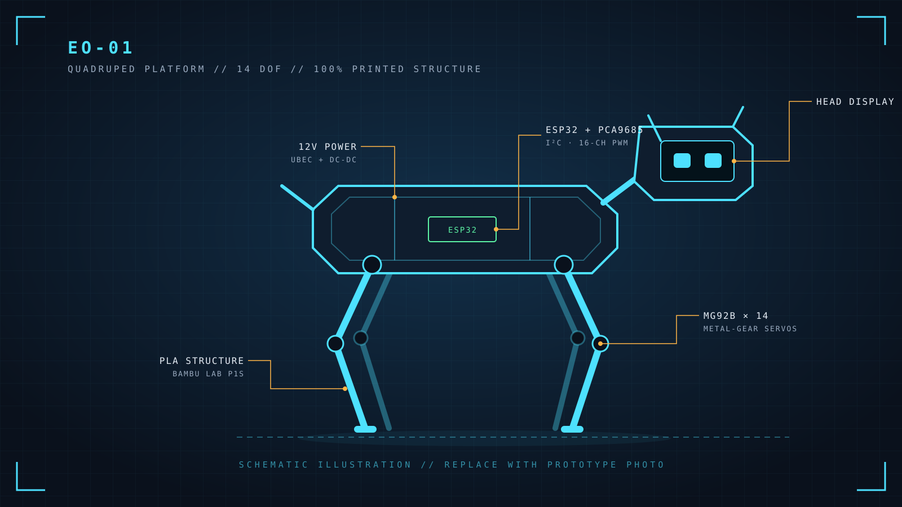

Overview
Most capable quadruped robots are expensive, closed, and built from machined aluminum. EO-01 takes the opposite approach: a platform that the community can print, assemble, modify and reproduce at home. The design pairs a sci-fi industrial look with off-the-shelf hobby electronics and a fully printable PLA structure, tuned for a Bambu Lab P1S.
The current prototype walks stably, performs dynamic movements including jumps, and expresses itself through an interactive head display — all driven by custom control software written for this robot.
Design goals
- Accessible fabrication — every structural part prints in PLA on a consumer FDM printer.
- No specialized manufacturing — no CNC, laser cutting or custom metal parts.
- Off-the-shelf electronics — widely available hobby servos, ESP32 and PCA9685 boards.
- Reproducible by the community — designed to be rebuilt, repaired and remixed.
- Character, not just mechanics — a sci-fi aesthetic and an expressive display head.
Current capabilities
Stable quadruped walking
Coordinated gait across all four legs with a steady, balanced body.
Dynamic moves & jumping
Expressive motion sequences and jump actions beyond basic locomotion.
Interactive head display
A display-based face that gives EO-01 personality and visual feedback.
Custom control software
Built-from-scratch tools for motor alignment and coordinated multi-servo movement.

Demo videos
Hosted on Xiaohongshu (rednote). Links open in a new tab.
Hardware
| Qty | Component | Role |
|---|---|---|
| 14 | MG92B servo | Metal-gear micro servos driving every joint |
| 1 | ESP32 DevKit | Main controller — motion control, display, connectivity |
| 1 | PCA9685 servo controller | 16-channel PWM driver over I²C |
| 1 | 12V battery system | Main power source |
| — | UBEC + DC-DC regulators | Step 12V down to stable servo and logic rails |
| — | PLA filament | All structural parts, printed on a Bambu Lab P1S |
System architecture
Software
EO-01 runs custom control software developed specifically for this platform, covering two core problems every servo-based legged robot has to solve:
- Motor alignment — calibrating each of the 14 servos so that printed parts, horn positions and mechanical tolerances all map to a consistent joint zero.
- Coordinated movement — synchronizing all joints through the PCA9685 to produce stable walking gaits, dynamic actions and jumps.
- Expression — driving the head display so the robot reacts and feels alive.
Fabrication
All non-electronic structural components are printed in PLA on a Bambu Lab P1S. Choosing a common material and a popular consumer printer keeps the barrier to entry low: if you can print, you can build EO-01.
The shell is printed in multi-color PLA — white armor plates, orange accents and black joints — with
the EO-01 callsign and panel lines printed directly into the parts.
Build log
- v0
First walking prototype
Printed frame, 14-servo leg and body system, ESP32 + PCA9685 control stack. Stable walking achieved.
- v1 head
Head redesign
The v0 head wasn't rigid enough and wobbled while walking, so it was redesigned. Slots are already in place for a rear head cover.
- Motion
Dynamic actions & jumping
Extended the control software beyond walking to dynamic movement sequences and jumps.
- Next
MakerWorld crowdfunding
Submitting EO-01 to the MakerWorld crowdfunding program to take it from prototype to a platform anyone can build.
MakerWorld crowdfunding
Mission status: seeking backers
EO-01 is being submitted to the MakerWorld crowdfunding program. The goal is to turn the prototype into a polished, reproducible maker platform. Planned for the release:
- Print-ready model files optimized for Bambu Lab printers
- Full bill of materials with sourcing notes
- Step-by-step assembly and wiring guide
- Control software with the servo alignment tool